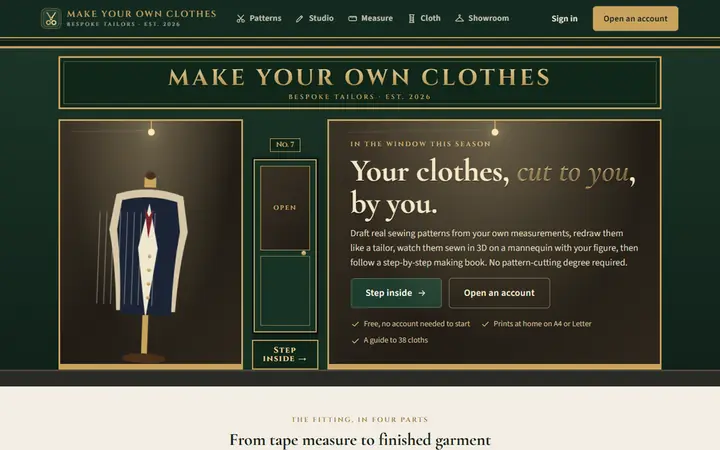
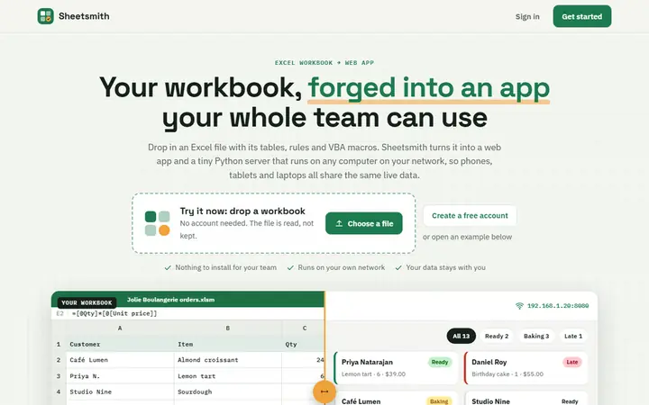
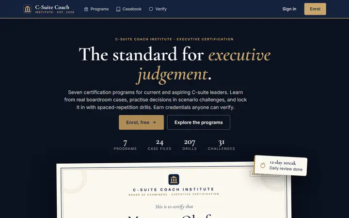

Acompañar a directivos en el cambio
Reflexionar sobre decisiones difíciles, dinámicas de equipo y los retos de liderazgo que llegan con el crecimiento.
Coaching de liderazgo →Personas y tecnología, trabajando juntas
Hablemos de
Empieza con una llamada corta. Hablaremos del reto y veremos si puedo ayudarte.
Mi enfoque
Un proceso lento puede apuntar a la herramienta equivocada, a una decisión pendiente o a un equipo que ha superado su forma de trabajar.
Soy Vitalijs: ingeniero mecánico y de software convertido en líder de proyectos y de personas. Trabajo con quienes están más cerca del problema, encuentro la verdadera fuente de fricción y ayudo al equipo a elegir un cambio que pueda poner en práctica.
Eso puede significar acompañar a un directivo, crear una herramienta interna, hacer útiles los datos del negocio o automatizar una tarea repetitiva. La solución debe ajustarse al problema.
Ver cómo puedo ayudar
Formas de trabajar juntos
Te ayudo a encontrar el origen del problema y luego a elegir un camino práctico para avanzar.
Reflexionar sobre decisiones difíciles, dinámicas de equipo y los retos de liderazgo que llegan con el crecimiento.
Coaching de liderazgo →Sustituir un apaño torpe por un producto enfocado que se adapte a cómo la gente hace su trabajo.
Herramientas internas →Poner medidas útiles e informes claros delante de las personas que deben actuar.
Datos y análisis →Simplificar el proceso y luego automatizar los pasos que no necesitan a una persona.
Automatización →Una forma sencilla de empezar
Entender la situación, acordar el trabajo y entregarlo en pasos claros que puedes revisar por el camino.
Cómo funciona un proyectoMi trabajo a través de Addanapp
He creado 57 aplicaciones en línea para negocios, estudiantes, familias y creadores. Aquí tienes tres, elegidas al azar.

Traza patrones de costura a medida, rediséñalos, cóselos en 3D sobre un maniquí con tus medidas y sigue un libro de confección paso a paso.
make-my-clothes.anvil.app ↗
Sube un libro de Excel con sus tablas, fórmulas, reglas y macros VBA y obtén una aplicación web más un pequeño servidor Python que funciona en tu red local.
sheetsmith.anvil.app ↗
Formación ejecutiva para la alta dirección: casos de negocio reales, retos de consejo de administración y ejercicios de repetición espaciada. Obtén certificados del C-Suite Coach Institute.
csuite-coach.anvil.app ↗Más allá del encargo
Creo, aprendo y experimento entre productos, problemas de negocio e ideas, a veces en direcciones inesperadas.
Empieza con una conversación
Cuéntame el proceso, el reto de equipo o la idea que parece atascada. Lo hablaremos y encontraremos un siguiente paso útil.
Agendar una primera llamada